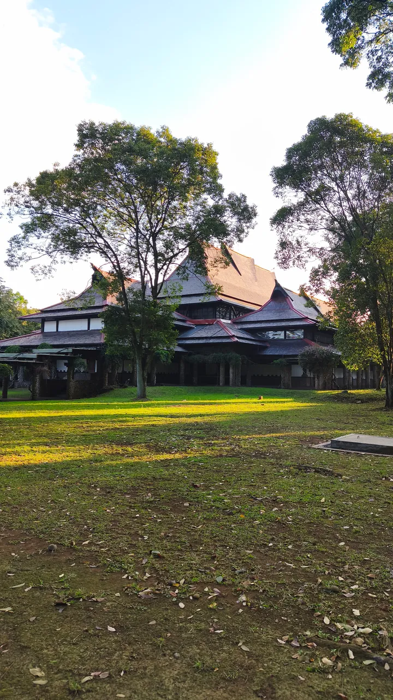

ITB · Kampus Ganesha
Keandalan data
Status sumber untuk tanggal berlaku ini; sumber dapat memiliki jam yang kosong.
Aula Barat · Kampus Ganesha · Foto dokumentasi, bukan kondisi cuaca langsung

Bukan informasi resmi BMKG. Untuk cuaca ekstrem, pantau peringatan dini BMKG dan kondisi setempat. Indeks aktivitas adalah panduan heuristik tentang potensi gangguan, bukan peluang cuaca berbahaya. Peluang hujan tidak menyatakan intensitasnya.
Sumber
9/10 sumber aktif
| Model | Sumber | Aktif | Bobot |
|---|---|---|---|
| BMKG | BMKG | yes | 1.4315 |
| CMA | Open-Meteo / CMA GRAPES | yes | 1.1246 |
| ECMWF | Open-Meteo / ECMWF | yes | 1.6705 |
| GFS | Open-Meteo / NOAA GFS | yes | 1.3318 |
| ICON | Open-Meteo / DWD ICON | yes | 1.4384 |
| KMA | Open-Meteo / KMA | no | 0.3393 |
| METEOFRANCE | Open-Meteo / Meteo-France | yes | 1.4541 |
| METNO | MET Norway | yes | 1.3057 |
| UKMO | Open-Meteo / UK Met Office | yes | 1.2977 |
| JMA_BACKUP | Open-Meteo / JMA | yes | 1.0 |
Peta
Peta risiko
Warna berubah mengikuti jam.